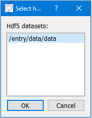

Editing Parameters in the GUI#
The GUI tries to support the user as much as possible by only allowing the user to enter acceptable value types. In addition, the GUI frames have additional saveguards in place to verify the consistency of the entered values.
Types of input#
Different types of widgets are implemented to help the user:
- Generic inputs

Generic inputs allow the user to enter free text input. The input will be restricted to the acceptable type. For example, an integer field will only accept an optional leading minus followed by numbers. A string will accept any characters.
- Parameters with predefined choices

Parameters which are restricted to certain pre-defined choices will be restricted to these choices by allowing only to select between the predefined choices from a drop-down menu:

Selecting the choice from the drop-down menu with the mouse will update the Parameter value.
- Filenames

Filenames can be entered by giving the filename (and absolute path) as a string in the entry field or by selecting a file from the filesystem. Clicking on the “open” button opens a selection dialogue to pick a file and its name will be filled in the field for the filename. The filename can be filtered for supported extensions by changing the selection in the dialogue. The exact feel and look of the dialogue depends on the operating system.
- Hdf5 dataset keys

Hdf5 dataset keys can be entered by giving the dataset key as string in the entry field or by selecting from the available keys of a file. Clicking on the “open” button opens a selection dialogue to pick a hdf5 file.
After selecting a file, a second pop-up window will show with all the dataset keys in the selected file and the user can select one of these to be used.
Using “cancel” during either of the two popup windows will keep the old value.
{kind=link}
Help#
A help tooltip is implemented for all Parameters. It can be accessed by hovering the mouse over either the Parameter label or the selection widget.
An example is shown below:

Type-checking#
pydidas Parameters support any Python type, but effectively only the following types are used for input:
integer numbers
floating point numbers
strings
Depending on the type of the Parameter, the following characters are acceptable:
Parameter type |
acceptable inputs |
|---|---|
bool |
“True” or “False” (case insensitive) |
integer |
optional leading “-” followed by any number of digits [0123456789] |
integer which accepts None |
as above, additionally accepts “None” (case insensitive) |
float |
optional leading “-” followed by any number of digits [0123456789] and optionally followed by a period “.” and any number of digits |
float which accepts None |
as above, additionally accepts “None” (case insensitive) |
string |
Accepts any UTF-8 characters in any combination. |
In addition, some unique Parameters may also accept other inputs, for example
nan for numbers.